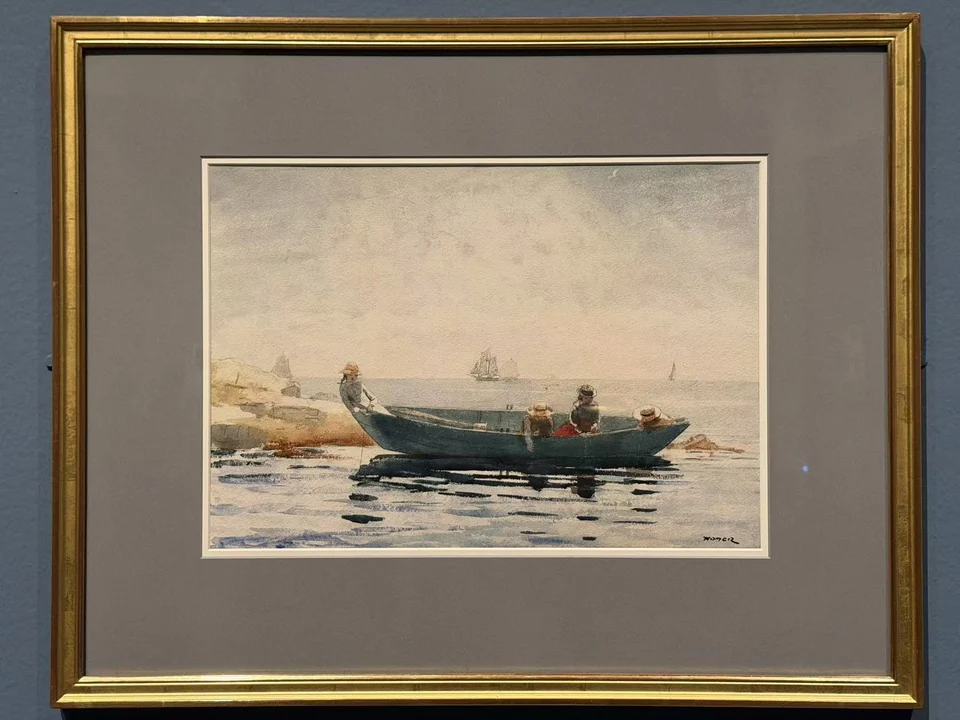

WINSLOW HOMER / LOOK CLOSER
绿色小艇
The Green Dory

- 作者／制作者
- 温斯洛·霍默（Winslow Homer）
- 年代
- 1880
- 媒介
- 石墨底稿上施水彩
- 展签原文
- Watercolor over graphite
- 收藏
- 波士顿美术馆
- 编号
- 42.538
- 观看地点
- 休斯顿美术馆 · Of Light and Air
作品信息与文中展签说明据现场展签 ↗。
WINSLOW HOMER / LOOK CLOSER
The Green Dory

作品信息与文中展签说明据现场展签 ↗。